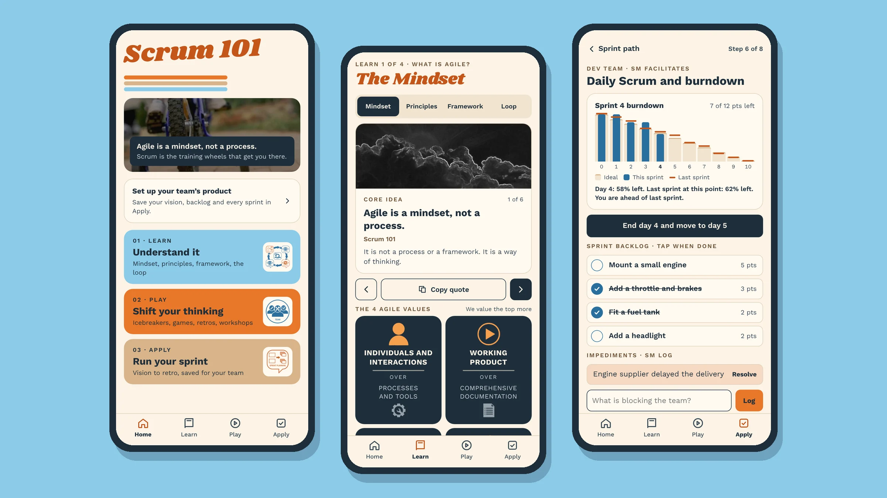
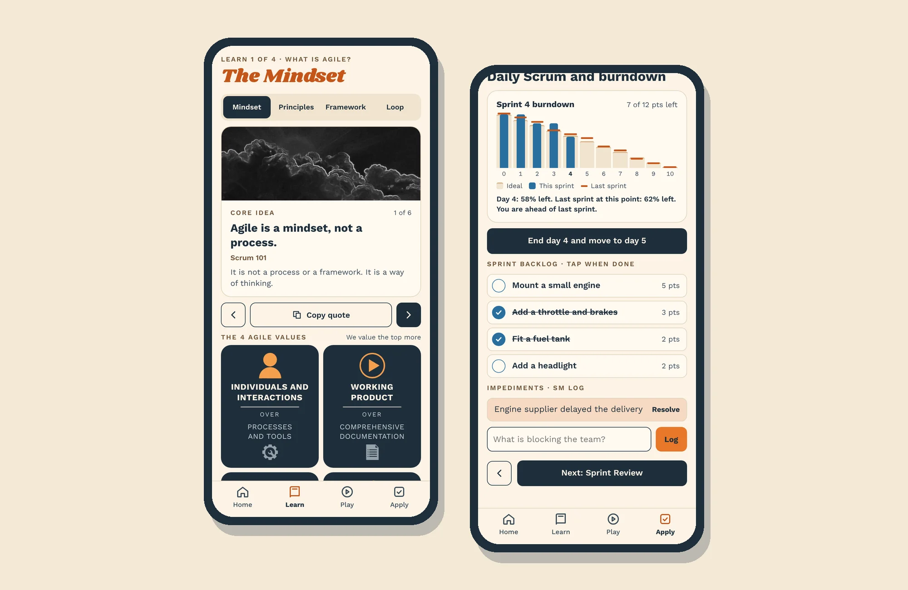
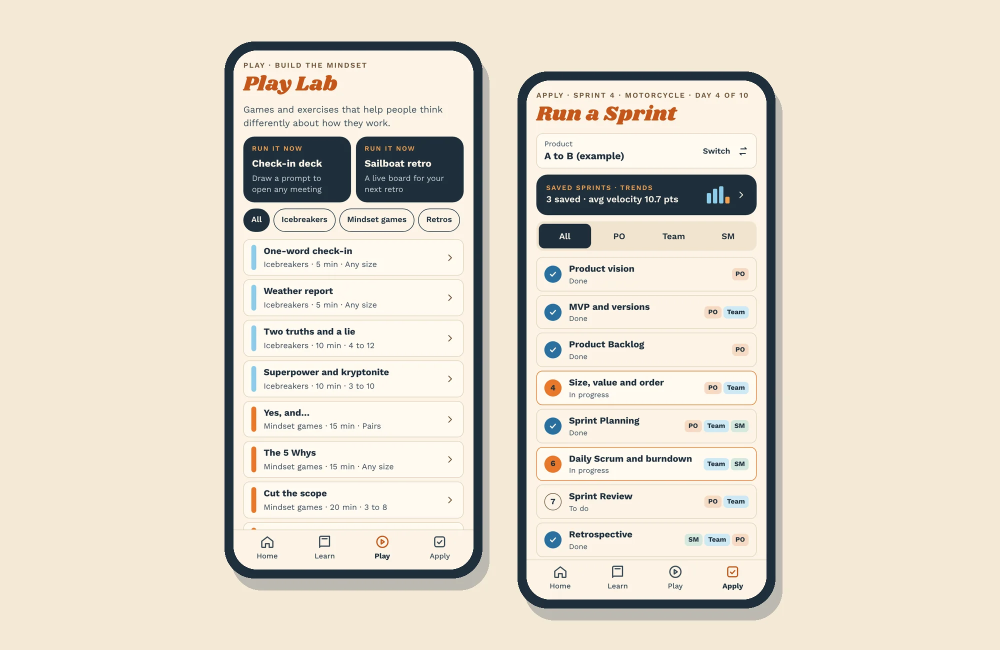

Scrum 101
A working Scrum coaching app, from idea to phone in one day.
1 dayconcept to working app
3modes: Learn, Play, Apply
10+ yrsof Agile teaching built in

- Client
- Personal product
- Company
- Independent · 2026
- Role
- Creator
- Timeline
- 1 day
- Discipline
- Product concept, UX/UI, content, AI-assisted build
Challenge
My Scrum 101 workshop lived in slide decks. Teams needed something on their phones in the middle of a sprint: to learn the framework, run a better retro, or see if the sprint is on track.
Solution
- Three modes that follow how I teach: Learn (mindset to sprint loop), Play (icebreakers, games, retros) and Apply (run a real sprint).
- A guided sprint path for Product Owner, team and Scrum Master, with a live burndown compared against the last sprint.
- Designed and built in one day with Claude, on my Golden Hour design system.
My role
- Product concept and content, drawn from 10+ years of teaching Agile
- Designed the user experience and visual system
- Built the working app in one day with Claude
Highlights


Results
- A working, mobile-first app in one day, from my own workshop material.
- Live at scrum101.netlify.app ↗